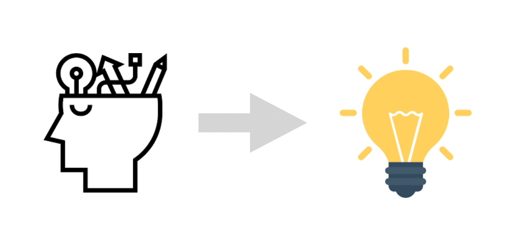

기업의 성장 하려면 통찰을 통해 숨은 본질을 파악해 문제를 해결해 나가는 것이 필요하다. 기업에 있어서 본질은 기업의 존립을 좌우하는 핵심 가치이다.

세계적 기업들은 저마다 본질을 추구하고 있다. 구글은 최근 유튜브, 클라우드 서비스 등의 사업 영역을 확장하고 있지만, 구글의 본질은 검색이다.애플은 아이폰과 같은 혁신 제품을 생산 했지만 컴퓨터 그 이상의 것을 추구한다. 바로, 심플이다. 애플은 경쟁사 델과 달리 제품군이 단 4가지였지만, 천문학적인 이윤을 달성할 수 있었다. 애플은 고객에게 단순한 구매 고객을 제공함으로서, 애플이라는 브랜드를 더욱 신뢰하게 만들었다.
애플 혁신을 가능케 한 ‘심플함’의 11가지 원칙
Think ‘냉혹하게, 작게, 최소로, 가동성, 상징, 표현 방식, 평소처럼, 인간을, 회의적으로, 전쟁을, 앞서’
본질을 꿰뚫 수 있는 통찰
통찰이 있어야 본질을 꿰뚫을 수 있는 힘이 생긴다. 스마트폰의 대중화로 동영상, 뉴스 컨텐츠 등을 통해서 수많은 정보를 접하고 있다. 가짜 뉴스가 넘쳐 나고 어떤 정보가 올바른 정보인지, 판단을 어렵게 한다. 통찰력을 갖추기 위해서는 세가지의 접근이 필요하다.
- 경험을 통해 생각하기
- 지식 끄집어 내기
- 관점 이동
경험은 정보의 본질을 이해 함에 있어 여러 관점으로 볼 수 있게 한다. 본질을 꿰뚫기 위해 풍부한 경험을 가지고 있는 것이 유리하다. 예를 들어 아이폰을 경험해 보았다면, 애플이 추구하는 브랜드 본질을 보다 직관적으로 이해할 수 있다. 다음으로 지식을 끄집어 내는 과정을 통해 본질에 대한 접근을 할 수 있다. 예를 들어 파타고라스 정리에 대한 지식을 가지고 있다면 삼각비가 무엇인지를 좀더 쉽게 알 수 있다. 마지막으로 관점이동이다. 비록 오웰과 같은 작품은 작가의 전체주의 비판 시각을 가지고 있다. 작가의 관점으로 ‘동물농장’, 1984 작품을 다시 읽어 보면 해당 작품이 이야기 하고자 내용의 본질을 파악하는데 도움이 된다.